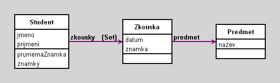

Studenti, zkousky a znamky
author(s): V. Merunka
To je mini priklad studentu, zkousek a znamek
Workspace
Workspace Objects
Script
"Note that variables begining with uppercase letter will be moved into the workspace pool."
S1 := Student new.
S1 jmeno: 'Jan'.
S1 prijmeni: 'Novak'.
p1 := Predmet new.
p1 nazev: 'Objektove modelovani'.
p2 := Predmet new.
p2 := 'Matematika'.
z1 := Zkouska new.
z1 datum: '3 3 2006' asDate.
z1 znamka: 1.
z1 predmet: p1.
z2 := Zkouska new.
z2 datum: '12 3 2006' asDate.
z2 znamka: 2.
z2 predmet: p2.
S1 zkousky add: z1; add: z2
Diagram

Classes
Predmet
|
instance variables
nazev :String
|
methods
initialize
nazev
nazev:
|
|
|
code of non-accessing methods:
Zkouska
|
instance variables
datum :Date
predmet :Object
znamka :Number
|
methods
datum
datum:
initialize
predmet
predmet:
znamka
znamka:
|
|
|
code of non-accessing methods:
Student
|
instance variables
jmeno :String
prijmeni :String
zkousky :Set
|
methods
initialize
jmeno
jmeno:
prijmeni
prijmeni:
prumernaZnamka
zkousky
znamky
|
|
|
code of non-accessing methods:
-
initialize
"generated by Daskalos"
super initialize.
jmeno := nil.
prijmeni := nil.
zkousky := Set new.
-
prumernaZnamka
^self znamky avg roundTo: 0.01
-
znamky
^zkousky collect: [:z | z znamka]
Links
Data file and
class source.
Generated by Daskalos - Object Modeling Tutor (C) 2006 V. Merunka
May 7, 2007